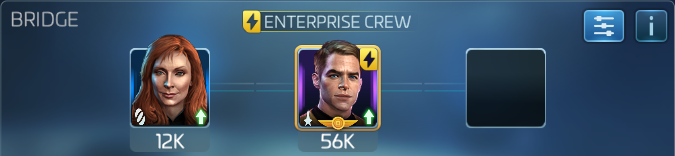
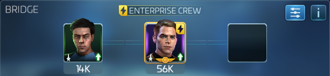

Solo Armadas
Solo Armadas are different than other armadas in that you run them alone with three of your own ships. The target has more health and lower damage output relative to FKR armadas, so burning and ramping damage can do a lot of the work here. It's important to remember that burning and hull breach affect the target, so all your ships and their officers can benifit from them.
Mitigation
Get an officer running mitigation on all your ships. There are quite a few ways to do this

This is the highest damage output of the three mitigation crews discussed here. Dont bother with changeling kira, she's not very effective. Use Six of Eleven for dps instead, or use the extra spot for hullbreach, burning. This crew works very well with nero and gorkon, because mile's extra shots gives them both more rolls to activate, and Sisko's crit ramp will essentially guarantee 100% up time on hull breach after only a few rounds.

This is a good middle ground between damage and loot yield. The last slot can go to either khan for dps, or to utility.
Damage Ramp from Riker, Mitigation from Beverly

Kind of a niche pick, it's interesting because picard's captain maneuver will add a 120% boost to all officer maneuvers. So an officer ability with a value of let's say 10, would have 12 added to it for a total of 22. this means putting either Georgiou or Lorca side car would give them over 100% chance to activate every round.


These crewes do essentially the same thing; regen shields and raise mitigation. Spock's ability to regen shields is largely based on how much defense you can stack lower decks, as well as the tier of your spock. Once you progress beyond 35 uncommon solo armadas, Spock probably wont be regenerating enough shields to make this crew worthwhile. if your morale ship's shields are depleted in your combat log, it might be time to stop crewing Spock and just use another mitigation crew. The choice between Beverly and Zhou is based on their teir, and you should choose whichever has the higher value of defense to mitigation.
On The Enterprise
 Smilar to running kirk and Spock on another ship, The Enterprise's ship ability regens shields with no need for Spock. This leaves you with a free officer slot to use for utility or damage.
On The Sarcophagus
The Sarc has a lot of hull and deals almost no damage outside of territory nodes. If you've been skipping lots of ships and don't have a third ship that can survive armada damage, you can use your Sarc as a platform for Lorca or Georgiou to maintain hull breach or burning.
Picard and Beverly is the best thing to run here, as they will ensure even a t1 Lorca or Georgiou will activate every round.
If you don't have Picard, try this with Georgiou or Lorca in the third slot.